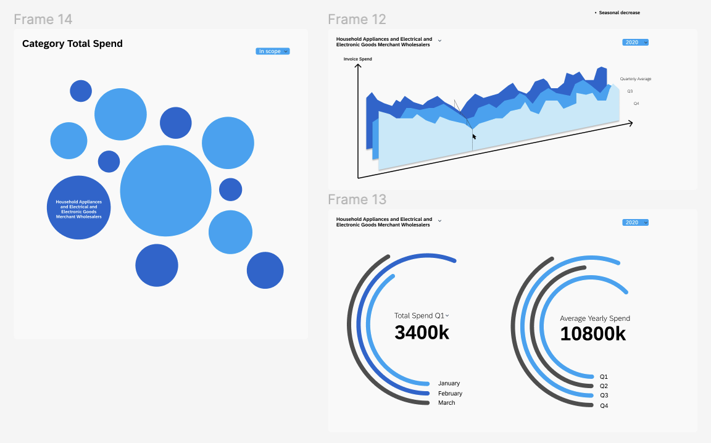

I worked for a year as a Design Technologist Intern at SAP Labs US.
Some of my projects there included:
Lobby Installation Prototyping: Used Processsing and TouchDesigner to prototype interactive installation
for SAP’s Palo Alto Office Lobby. Used SAP text-based data to create dynamic visuals. Implemented
interaction using Open CV and Microsoft Kinect sensor.
Interactive Framer Components: Created sliders, navbars and other smaller components in React for
Framer demos on Digital Finance.
Data Visualization Report: Conducted UX Research on time-based data visualization techniques and wrote
a report documenting them.
Predictive Chart Demo: Used Figma and Framer to build interactive 3d data visualizations using SAP data.
Developed browser-based prototype using React.js, three.js and Typescript. Created user flows and wireframes
in Figma.
SAP Labs Internship
data-driven business decision simulator in Framer
Watch the snowfall as you read about the internship
